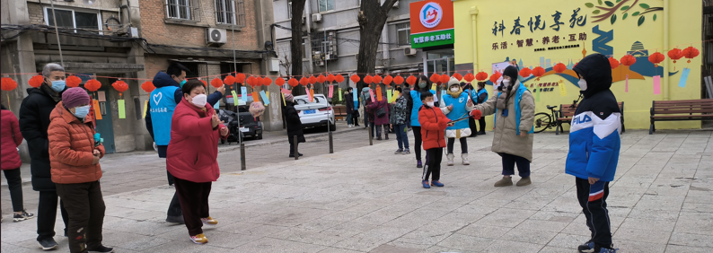

关于我们

坚决维护社区安全
为了能及時发现消防，用电，媒气等安全隐患，守護科春社区。 我們的员工均接受了一警六员的消防培訓，持证上岗。部分员工更主动接受了红十字会的急救培訓课程，务求在关键时刻， 拯救生命。除此之外，员工们更会定期学习新的技能，接受防灾，检灾，处理树林病虫害等培訓，终身学习。 在7月到8月的雨季汛期，我們会委任一名员工，24小時在岗待命，一旦发现积水与树木倾斜问题造成安全隐患，将立刻上报有关物业。
社区服务
我們不仅重视社區安全，我們还十分重视科春居民的生活素質和幸福指数。我們长久以來都在积极开展便民利民的社区服務。 我們提供代办生育证的服務并协助居民了解社會福利并完成有关程序。例如协助低收入，低保人士申請廉租屋 等。疫情期间，我们积极地举行疫苗接种活动，迎合国家发展大局。我們更提供了免費的法律援助，居民可以自行预约社區律師李律師，寻求协助。社區更会定期向居民和员工提供免費的法律课堂， 科普法律知識。
关爱弱勢社群
我們十分重视弱勢社群的幸福指数跟福利，我們会定期探訪孤寡老人，慰問并关爱他們。对於持有退役证的退役军人，我們将了解他們的需求， 提供有关的技能培訓并转介到再就业部門。 部分人仕找到了自己的爱好，成為了文明倡導员，交通引导员，巡邏员，为社区作贡献，延續军人们无私，坚守的精神。
接诉即办专班小组
接诉即办专班小組24小時在缐，旨在解决社區各種从小到大的问题。 例如居民门口出現异味，我們会调监控并派遣人手找出问题的源頭。对於居民纠纷， 我們将提供专业的调解服务，搭建平台，让引导双方解決问题。